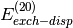

SAPT_OS_SCALE¶
The scale factor used for opposite-spin pairs in SCS computations. SS/OS decomposition performed for
and  terms.
- Type: double
- Default: 6.0/5.0
The scale factor used for opposite-spin pairs in SCS computations. SS/OS decomposition performed for
- Type: double
- Default: 6.0/5.0